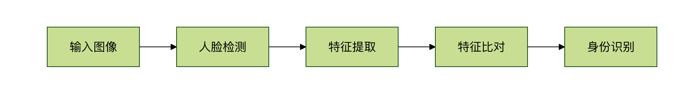

機械学習アプリケーション
機械学習アプリケーションはいくつかの主要な分野に分類できます。各分野には独自の適用シーンと課題があります：
- コンピュータビジョン：機械に世界を「見て理解させる」
- 自然言語処理：機械に人間の言語を「理解させる」
- レコメンドシステム：パーソナライズされたコンテンツのレコメンド
- 予測分析：将来のトレンドと結果を予測する
- 異常検知：異常なパターンを発見する
なぜこれらのアプリケーションに機械学習が必要なのか？
想像してみてください。従来のプログラミング方法でこれらの問題を解決しようとするなら：
- 顔認識：顔のさまざまな変化（角度、光線、表情など）を記述するために無数のルールを書く必要がある
- 言語翻訳：言語の組み合わせごとに膨大な辞書と文法規則を作成する必要がある
- レコメンドシステム：各ユーザーの好みと各商品の特徴を人手で分析する必要がある
機械学習により、コンピュータは大量のデータからこれらの複雑なパターンを自動的に学習でき、問題解決のプロセスを大幅に簡素化します。
コンピュータビジョンアプリケーション
顔認識
適用シーン：スマートフォンのロック解除、入退室管理システム、本人認証
動作原理：
- 画像内の顔の位置を検出する
- 顔の特徴（目の間隔、鼻の形など）を抽出する
- データベース内の顔の特徴と照合する

自動運転
適用シーン：テスラ Autopilot、百度 Apollo、Google Waymo
中核タスク：
- 物体検出：車両、歩行者、交通標識を認識する
- 車線検出：車線の境界を特定する
- 経路計画：走行ルートを決定する
例
# 自動運転における物体検出の例（概念コード）
import cv2
import numpy as np
def detect_objects(image):
"""
画像内の物体（車両、歩行者、交通標識など）を検出する
"""
# 1. 画像を前処理する
processed_image = preprocess_image(image)
# 2. 学習済みの深層学習モデルを使用して物体を検出する
# ここでは事前学習済みのYOLOモデルを例として使用する
boxes, classes, scores = yolo_model.detect(processed_image)
# 3. 信頼度の低い検出結果をフィルタリングする
valid_detections = filter_detections(boxes, classes, scores)
# 4. 画像上に検出結果を描画する
result_image = draw_detections(image, valid_detections)
return result_image, valid_detections
# 実際のアプリケーションでは、これは自動運転システム全体の1つのコンポーネントにすぎない
# センサーフュージョン、経路計画などの複数のモジュールと組み合わせる必要もある
import cv2
import numpy as np
def detect_objects(image):
"""
画像内の物体（車両、歩行者、交通標識など）を検出する
"""
# 1. 画像を前処理する
processed_image = preprocess_image(image)
# 2. 学習済みの深層学習モデルを使用して物体を検出する
# ここでは事前学習済みのYOLOモデルを例として使用する
boxes, classes, scores = yolo_model.detect(processed_image)
# 3. 信頼度の低い検出結果をフィルタリングする
valid_detections = filter_detections(boxes, classes, scores)
# 4. 画像上に検出結果を描画する
result_image = draw_detections(image, valid_detections)
return result_image, valid_detections
# 実際のアプリケーションでは、これは自動運転システム全体の1つのコンポーネントにすぎない
# センサーフュージョン、経路計画などの複数のモジュールと組み合わせる必要もある
医療画像診断
適用シーン：X線画像分析、CTスキャン、病理スライド分析
利点：
- 人間の医師よりも疲労が少ない
- 人間の目では気づきにくい微細な変化を発見できる
- 大量の画像を迅速に処理できる
自然言語処理アプリケーション
スマートアシスタント
適用シーン：Siri、小愛同学、天猫精霊
中核機能：
- 音声認識：音声をテキストに変換する
- 意図理解：ユーザーが何を求めているかを理解する
- 対話管理：一貫性のある対話を維持する
例
# スマートアシスタントのワークフロー（簡略化した例）
import speech_recognition as sr
from textblob import TextBlob
class SmartAssistant:
def __init__(self):
self.recognizer = sr.Recognizer()
def listen_and_respond(self):
"""ユーザーの音声を聞いて応答する"""
with sr.Microphone() as source:
print("聞いています...")
audio = self.recognizer.listen(source)
try:
# 1. 音声認識
text = self.recognizer.recognize_google(audio, language='zh-CN')
print(f"ユーザーが言った：{text}")
# 2. 意図理解
intent = self.understand_intent(text)
# 3. 応答を生成する
response = self.generate_response(intent, text)
print(f"アシスタントの応答：{response}")
return response
except sr.UnknownValueError:
return "すみません、よく聞き取れませんでした。もう一度言ってください"
def understand_intent(self, text):
"""ユーザーの意図を理解する"""
# 簡略化した意図認識
if "天気" in text:
return "weather"
elif "時間" in text:
return "time"
elif "ジョーク" in text:
return "joke"
else:
return "unknown"
def generate_response(self, intent, text):
"""意図に基づいて応答を生成する"""
if intent == "weather":
return "今日は晴れ、気温25度です"
elif intent == "time":
from datetime import datetime
return f現在の時刻は{datetime.now().strftime('%H:%M')}です
elif intent == "joke":
return "なぜプログラマーは夜が好きなのか？バグがないから！"
else:
return "すみません、まだ学習中で、この質問を理解できません"
# 使用例
assistant = SmartAssistant()
# assistant.listen_and_respond() # 実際に実行する際はコメントを外す
import speech_recognition as sr
from textblob import TextBlob
class SmartAssistant:
def __init__(self):
self.recognizer = sr.Recognizer()
def listen_and_respond(self):
"""ユーザーの音声を聞いて応答する"""
with sr.Microphone() as source:
print("聞いています...")
audio = self.recognizer.listen(source)
try:
# 1. 音声認識
text = self.recognizer.recognize_google(audio, language='zh-CN')
print(f"ユーザーが言った：{text}")
# 2. 意図理解
intent = self.understand_intent(text)
# 3. 応答を生成する
response = self.generate_response(intent, text)
print(f"アシスタントの応答：{response}")
return response
except sr.UnknownValueError:
return "すみません、よく聞き取れませんでした。もう一度言ってください"
def understand_intent(self, text):
"""ユーザーの意図を理解する"""
# 簡略化した意図認識
if "天気" in text:
return "weather"
elif "時間" in text:
return "time"
elif "ジョーク" in text:
return "joke"
else:
return "unknown"
def generate_response(self, intent, text):
"""意図に基づいて応答を生成する"""
if intent == "weather":
return "今日は晴れ、気温25度です"
elif intent == "time":
from datetime import datetime
return f現在の時刻は{datetime.now().strftime('%H:%M')}です
elif intent == "joke":
return "なぜプログラマーは夜が好きなのか？バグがないから！"
else:
return "すみません、まだ学習中で、この質問を理解できません"
# 使用例
assistant = SmartAssistant()
# assistant.listen_and_respond() # 実際に実行する際はコメントを外す
機械翻訳
適用シーン：Google翻訳、百度翻訳、有道翻訳
動作原理：
- ソース言語のテキストを数値表現にエンコードする
- ニューラルネットワークを通じて言語間のマッピング関係を学習する
- ターゲット言語のテキストにデコードする
感情分析
適用シーン：製品レビュー分析、ソーシャルメディア監視、顧客フィードバック処理
例
# 感情分析の例
from textblob import TextBlob
import jieba
def analyze_sentiment_chinese(text):
"""
中国語の感情分析の例
"""
# jieba を使用して分かち書き
words = jieba.cut(text)
word_list = " ".join(words)
# ここでは簡略化して処理しています。実際のアプリケーションでは専用の中国語感情分析モデルが必要です
# SnowNLP、BERT-Chinese などのライブラリを使用できます
# 感情分析結果をシミュレーションする
positive_words = ["良い", "素晴らしい", "好き", "満足", "おすすめ"]
negative_words = ["悪い", "ひどい", "嫌い", "がっかり", "おすすめしない"]
pos_count = sum(1 for word in positive_words if word in text)
neg_count = sum(1 for word in negative_words if word in text)
if pos_count > neg_count:
return "ポジティブな感情"
elif neg_count > pos_count:
return "ネガティブな感情"
else:
return "中立的な感情"
# テスト例
reviews = [
"この製品は本当に素晴らしく、私はとても気に入っています！",
"品質が悪すぎて、全く購入する価値がありません。",
"まあまあで、特に特別なところはありません。"
]
for review in reviews:
sentiment = analyze_sentiment_chinese(review)
print(f"コメント：{review}")
print(f"感情：{sentiment}")
print("---")
from textblob import TextBlob
import jieba
def analyze_sentiment_chinese(text):
"""
中国語の感情分析の例
"""
# jieba を使用して分かち書き
words = jieba.cut(text)
word_list = " ".join(words)
# ここでは簡略化して処理しています。実際のアプリケーションでは専用の中国語感情分析モデルが必要です
# SnowNLP、BERT-Chinese などのライブラリを使用できます
# 感情分析結果をシミュレーションする
positive_words = ["良い", "素晴らしい", "好き", "満足", "おすすめ"]
negative_words = ["悪い", "ひどい", "嫌い", "がっかり", "おすすめしない"]
pos_count = sum(1 for word in positive_words if word in text)
neg_count = sum(1 for word in negative_words if word in text)
if pos_count > neg_count:
return "ポジティブな感情"
elif neg_count > pos_count:
return "ネガティブな感情"
else:
return "中立的な感情"
# テスト例
reviews = [
"この製品は本当に素晴らしく、私はとても気に入っています！",
"品質が悪すぎて、全く購入する価値がありません。",
"まあまあで、特に特別なところはありません。"
]
for review in reviews:
sentiment = analyze_sentiment_chinese(review)
print(f"コメント：{review}")
print(f"感情：{sentiment}")
print("---")
レコメンドシステムアプリケーション
ECレコメンド
適用シーン：淘宝（タオバオ）の商品レコメンド、Amazonのレコメンド
レコメンド戦略：
- 協調フィルタリング：ユーザーの行動の類似性に基づくレコメンド
- コンテンツベースレコメンド：商品の特徴の類似性に基づくレコメンド
- ハイブリッドレコメンド：複数の戦略を組み合わせる
例
# 簡単な協調フィルタリングレコメンドの例
import numpy as np
# ユーザー-商品評価行列（行はユーザー、列は商品）
ratings = np.array([
[5, 3, 0, 1], # ユーザー1の商品1、2、4に対する評価
[4, 0, 0, 1], # ユーザー2の商品1、4に対する評価
[1, 1, 0, 5], # ユーザー3の商品1、2、4に対する評価
[1, 0, 0, 4], # ユーザー4の商品1、4に対する評価
[0, 1, 5, 4], # ユーザー5の商品2、3、4に対する評価
])
def user_similarity(user1, user2):
"""2人のユーザーの類似度を計算する（コサイン類似度）"""
# 両方のユーザーが評価した商品を見つける
common_items = np.where((user1 > 0) & (user2 > 0))[0]
if len(common_items) == 0:
return 0
# コサイン類似度を計算する
user1_ratings = user1[common_items]
user2_ratings = user2[common_items]
dot_product = np.dot(user1_ratings, user2_ratings)
norm1 = np.linalg.norm(user1_ratings)
norm2 = np.linalg.norm(user2_ratings)
if norm1 == 0 or norm2 == 0:
return 0
return dot_product / (norm1 * norm2)
def recommend_items(user_id, ratings_matrix, k=2):
"""指定されたユーザーに商品をレコメンドする"""
user_ratings = ratings_matrix[user_id]
# そのユーザーと他のユーザーとの類似度を計算する
similarities = []
for i, other_user in enumerate(ratings_matrix):
if i != user_id:
sim = user_similarity(user_ratings, other_user)
similarities.append((i, sim))
# 類似度で並べ替える
similarities.sort(key=lambda x: x[1], reverse=True)
# ユーザーが未評価の商品を見つける
unrated_items = np.where(user_ratings == 0)[0]
# 未評価商品に対するユーザーの評価を予測する
predictions = []
for item_id in unrated_items:
weighted_sum = 0
similarity_sum = 0
for similar_user_id, similarity in similarities[:k]:
if similarity > 0 and ratings_matrix[similar_user_id][item_id] > 0:
weighted_sum += similarity * ratings_matrix[similar_user_id][item_id]
similarity_sum += similarity
if similarity_sum > 0:
predicted_rating = weighted_sum / similarity_sum
predictions.append((item_id, predicted_rating))
# 予測評価で並べ替える
predictions.sort(key=lambda x: x[1], reverse=True)
return predictions[:3] # 上位3件のレコメンドを返す
# ユーザー0に商品をレコメンドする
user_id = 0
recommendations = recommend_items(user_id, ratings)
print(f"ユーザー{user_id}へのおすすめ商品：")
for item_id, predicted_rating in recommendations:
print(f"商品{item_id + 1}、予測評価：{predicted_rating:.2f}")
import numpy as np
# ユーザー-商品評価行列（行はユーザー、列は商品）
ratings = np.array([
[5, 3, 0, 1], # ユーザー1の商品1、2、4に対する評価
[4, 0, 0, 1], # ユーザー2の商品1、4に対する評価
[1, 1, 0, 5], # ユーザー3の商品1、2、4に対する評価
[1, 0, 0, 4], # ユーザー4の商品1、4に対する評価
[0, 1, 5, 4], # ユーザー5の商品2、3、4に対する評価
])
def user_similarity(user1, user2):
"""2人のユーザーの類似度を計算する（コサイン類似度）"""
# 両方のユーザーが評価した商品を見つける
common_items = np.where((user1 > 0) & (user2 > 0))[0]
if len(common_items) == 0:
return 0
# コサイン類似度を計算する
user1_ratings = user1[common_items]
user2_ratings = user2[common_items]
dot_product = np.dot(user1_ratings, user2_ratings)
norm1 = np.linalg.norm(user1_ratings)
norm2 = np.linalg.norm(user2_ratings)
if norm1 == 0 or norm2 == 0:
return 0
return dot_product / (norm1 * norm2)
def recommend_items(user_id, ratings_matrix, k=2):
"""指定されたユーザーに商品をレコメンドする"""
user_ratings = ratings_matrix[user_id]
# そのユーザーと他のユーザーとの類似度を計算する
similarities = []
for i, other_user in enumerate(ratings_matrix):
if i != user_id:
sim = user_similarity(user_ratings, other_user)
similarities.append((i, sim))
# 類似度で並べ替える
similarities.sort(key=lambda x: x[1], reverse=True)
# ユーザーが未評価の商品を見つける
unrated_items = np.where(user_ratings == 0)[0]
# 未評価商品に対するユーザーの評価を予測する
predictions = []
for item_id in unrated_items:
weighted_sum = 0
similarity_sum = 0
for similar_user_id, similarity in similarities[:k]:
if similarity > 0 and ratings_matrix[similar_user_id][item_id] > 0:
weighted_sum += similarity * ratings_matrix[similar_user_id][item_id]
similarity_sum += similarity
if similarity_sum > 0:
predicted_rating = weighted_sum / similarity_sum
predictions.append((item_id, predicted_rating))
# 予測評価で並べ替える
predictions.sort(key=lambda x: x[1], reverse=True)
return predictions[:3] # 上位3件のレコメンドを返す
# ユーザー0に商品をレコメンドする
user_id = 0
recommendations = recommend_items(user_id, ratings)
print(f"ユーザー{user_id}へのおすすめ商品：")
for item_id, predicted_rating in recommendations:
print(f"商品{item_id + 1}、予測評価：{predicted_rating:.2f}")
動画レコメンド
適用シーン：抖音、YouTube、Netflix
特徴：
- リアルタイムレコメンデーション（ユーザーの現在の行動に基づいて調整）
- マルチモーダルデータ（動画コンテンツ、ユーザー行動、時間など）
- コールドスタート問題への対応
予測分析アプリケーション
金融リスク管理
適用シーン：クレジットカード不正検出、ローン承認
例
# シンプルな不正検出の例
import numpy as np
from sklearn.ensemble import RandomForestClassifier
from sklearn.model_selection import train_test_split
# 取引データをシミュレーション
# 特徴量：取引金額、取引時間、店舗タイプ、場所など
# ラベル：0=正常、1=不正
np.random.seed(42)
# シミュレーションデータを生成
n_samples = 1000
n_features = 4
# 正常な取引
normal_transactions = np.random.normal(loc=[100, 14, 2, 3], scale=[50, 4, 1, 1],
size=(int(n_samples * 0.95), n_features))
# 不正取引（通常、金額が異常、時間が異常など）
fraud_transactions = np.random.normal(loc=[500, 3, 4, 1], scale=[200, 2, 1, 0.5],
size=(int(n_samples * 0.05), n_features))
# データを結合してラベルを追加
X = np.vstack([normal_transactions, fraud_transactions])
y = np.hstack([np.zeros(len(normal_transactions)), np.ones(len(fraud_transactions))])
# トレーニングセットとテストセットに分割
X_train, X_test, y_train, y_test = train_test_split(X, y, test_size=0.2, random_state=42)
# ランダムフォレストモデルを訓練
model = RandomForestClassifier(n_estimators=100, random_state=42)
model.fit(X_train, y_train)
# モデルを評価
accuracy = model.score(X_test, y_test)
print(f"モデル精度：{accuracy:.2f}")
# 新しい取引を予測
new_transaction = np.array([[450, 2, 4, 1]]) # 異常な取引
fraud_probability = model.predict_proba(new_transaction)[0][1]
print(f"新規取引が不正である確率：{fraud_probability:.2f}")
if fraud_probability > 0.5:
print("警告：不審な取引を検出しました！")
else:
print("取引は正常です。")
import numpy as np
from sklearn.ensemble import RandomForestClassifier
from sklearn.model_selection import train_test_split
# 取引データをシミュレーション
# 特徴量：取引金額、取引時間、店舗タイプ、場所など
# ラベル：0=正常、1=不正
np.random.seed(42)
# シミュレーションデータを生成
n_samples = 1000
n_features = 4
# 正常な取引
normal_transactions = np.random.normal(loc=[100, 14, 2, 3], scale=[50, 4, 1, 1],
size=(int(n_samples * 0.95), n_features))
# 不正取引（通常、金額が異常、時間が異常など）
fraud_transactions = np.random.normal(loc=[500, 3, 4, 1], scale=[200, 2, 1, 0.5],
size=(int(n_samples * 0.05), n_features))
# データを結合してラベルを追加
X = np.vstack([normal_transactions, fraud_transactions])
y = np.hstack([np.zeros(len(normal_transactions)), np.ones(len(fraud_transactions))])
# トレーニングセットとテストセットに分割
X_train, X_test, y_train, y_test = train_test_split(X, y, test_size=0.2, random_state=42)
# ランダムフォレストモデルを訓練
model = RandomForestClassifier(n_estimators=100, random_state=42)
model.fit(X_train, y_train)
# モデルを評価
accuracy = model.score(X_test, y_test)
print(f"モデル精度：{accuracy:.2f}")
# 新しい取引を予測
new_transaction = np.array([[450, 2, 4, 1]]) # 異常な取引
fraud_probability = model.predict_proba(new_transaction)[0][1]
print(f"新規取引が不正である確率：{fraud_probability:.2f}")
if fraud_probability > 0.5:
print("警告：不審な取引を検出しました！")
else:
print("取引は正常です。")
株価予測
適用シーン：クオンツ取引、投資判断
課題：
- 市場のノイズが大きい
- 非定常時系列
- さまざまな要因の影響を受ける
異常検知アプリケーション
ネットワークセキュリティ
適用シーン：侵入検知、マルウェア識別
動作原理：
- 正常なネットワークトラフィックパターンを学習
- 正常なパターンから逸脱した動作を検出
- アラートを発動またはブロック
工業品質検査
適用シーン：製品欠陥検出、設備故障予測
例
# シンプルな異常検知の例
import numpy as np
from sklearn.ensemble import IsolationForest
import matplotlib.pyplot as plt
# センサーデータをシミュレーション（正常データ + 少量の異常）
np.random.seed(42)
# 正常データ：デバイスが正常に動作しているときのセンサー読み取り値
normal_data = np.random.normal(loc=10, scale=1, size=(200, 2))
# 異常データ：デバイス故障時のセンサー読み取り値
anomaly_data = np.random.normal(loc=[15, 5], scale=[1, 1], size=(10, 2))
# データを結合
all_data = np.vstack([normal_data, anomaly_data])
# 孤立森林（Isolation Forest）を使用して異常検知
model = IsolationForest(contamination=0.05, random_state=42)
predictions = model.fit_predict(all_data)
# 結果を可視化
plt.figure(figsize=(10, 6))
normal_points = all_data[predictions == 1]
anomaly_points = all_data[predictions == -1]
plt.scatter(normal_points[:, 0], normal_points[:, 1],
c='blue', label='正常データ')
plt.scatter(anomaly_points[:, 0], anomaly_points[:, 1],
c='red', label='異常データ')
plt.xlabel('センサー1の読み取り値')
plt.ylabel('センサー2の読み取り値')
plt.title('デバイス稼働状態の異常検知')
plt.legend()
plt.grid(True)
plt.show()
print(f"{len(anomaly_points)} 個の異常点を検出しました")
import numpy as np
from sklearn.ensemble import IsolationForest
import matplotlib.pyplot as plt
# センサーデータをシミュレーション（正常データ + 少量の異常）
np.random.seed(42)
# 正常データ：デバイスが正常に動作しているときのセンサー読み取り値
normal_data = np.random.normal(loc=10, scale=1, size=(200, 2))
# 異常データ：デバイス故障時のセンサー読み取り値
anomaly_data = np.random.normal(loc=[15, 5], scale=[1, 1], size=(10, 2))
# データを結合
all_data = np.vstack([normal_data, anomaly_data])
# 孤立森林（Isolation Forest）を使用して異常検知
model = IsolationForest(contamination=0.05, random_state=42)
predictions = model.fit_predict(all_data)
# 結果を可視化
plt.figure(figsize=(10, 6))
normal_points = all_data[predictions == 1]
anomaly_points = all_data[predictions == -1]
plt.scatter(normal_points[:, 0], normal_points[:, 1],
c='blue', label='正常データ')
plt.scatter(anomaly_points[:, 0], anomaly_points[:, 1],
c='red', label='異常データ')
plt.xlabel('センサー1の読み取り値')
plt.ylabel('センサー2の読み取り値')
plt.title('デバイス稼働状態の異常検知')
plt.legend()
plt.grid(True)
plt.show()
print(f"{len(anomaly_points)} 個の異常点を検出しました")
クリックしてノートを共有
ノートはこの記事の内容の拡張である必要があります！
記事の投稿はこちらをクリック
登録招待コードの取得方法
ノートを共有する前にログインが必要です！
登録招待コードの取得方法